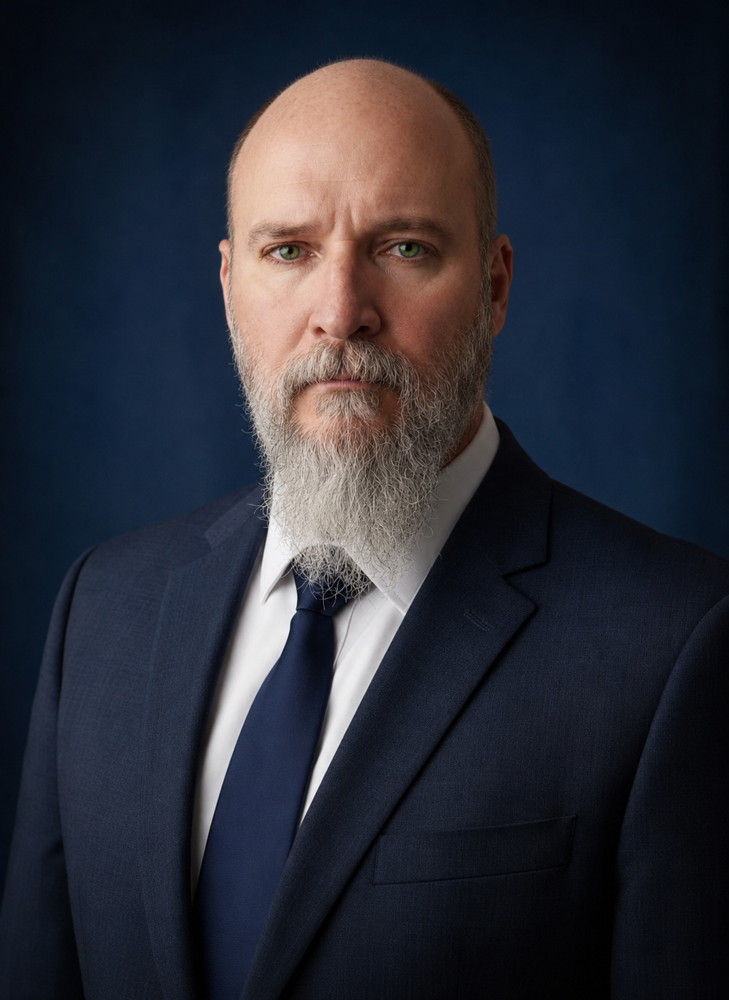

Optical Metrology · Experimental Mechanics · Computational Modeling
Metrología Óptica · Mecánica Experimental · Modelado Computacional
Jorge Ramón
Parra Michel, Ph.D.
Mechanical Engineer & Optical Metrology Researcher
Ingeniero Mecánico e Investigador en Metrología Óptica
I develop optical and computational methods to measure how mechanical components deform, move, and take shape. My work integrates interferometry, structured-light 3D, Digital Image Correlation (DIC), finite-element modeling, and physics-informed artificial intelligence for experimental validation, dimensional inspection, mechanical design, and advanced engineering research.
Desarrollo métodos ópticos y computacionales para medir cómo los componentes mecánicos se deforman, se desplazan y adquieren forma. Mi trabajo integra interferometría, luz estructurada 3D, Correlación Digital de Imágenes (DIC), modelado por elementos finitos e inteligencia artificial informada por física para validación experimental, inspección dimensional, diseño mecánico e investigación avanzada en ingeniería.

What I do
Qué hago
Engineering & Industry
Ingeniería e Industria
I apply optical metrology and experimental mechanics to practical engineering problems: locating deformation concentrations, evaluating welded and mechanical components, measuring full-field displacement and strain, validating finite-element models, inspecting manufactured geometry, and reconstructing components for CAD, CNC, or additive manufacturing. The objective is to connect physical testing with quantitative measurements that support design and engineering decisions.
Aplico metrología óptica y mecánica experimental a problemas concretos de ingeniería: localizar concentraciones de deformación, evaluar soldaduras y componentes mecánicos, medir campos completos de desplazamiento y deformación, validar modelos por elementos finitos, inspeccionar geometrías fabricadas y reconstruir componentes para CAD, CNC o manufactura aditiva. El objetivo es conectar la prueba física con mediciones cuantitativas que permitan sustentar decisiones de diseño e ingeniería.
Research & Academia
Investigación y Academia
My research focuses on developing measurement methods at the intersection of optics, mechanics, computation, and artificial intelligence. Current work includes interferometric displacement measurement, structured-light 3D reconstruction, Digital Image Correlation, uncertainty analysis, computational modeling, and physics-informed neural networks for solving inverse problems in optical metrology. These activities support scientific collaboration, graduate research, and technology transfer.
Mi investigación se concentra en desarrollar métodos de medición en la intersección entre óptica, mecánica, cómputo e inteligencia artificial. El trabajo actual incluye medición interferométrica de desplazamientos, reconstrucción 3D mediante luz estructurada, Correlación Digital de Imágenes, análisis de incertidumbre, modelado computacional y redes neuronales informadas por física para resolver problemas inversos en metrología óptica. Estas actividades sustentan colaboración científica, investigación de posgrado y transferencia tecnológica.
Research & Engineering Capabilities
Capacidades de Investigación e Ingeniería
Interferometric deformation measurement
Medición interferométrica de deformaciones
Full-field, non-contact measurement of sub-micron displacement and deformation for mechanical components, welded structures, and experimental stress analysis.
Medición sin contacto y de campo completo de desplazamientos submicrométricos y deformaciones en componentes mecánicos, estructuras soldadas y análisis experimental de esfuerzos.
3D shape & dimensional inspection
Forma 3D e inspección dimensional
Structured-light and laser methods for surface reconstruction, dimensional inspection, topometry, geometric comparison, and non-contact measurement of manufactured components.
Métodos de luz estructurada y láser para reconstrucción superficial, inspección dimensional, topometría, comparación geométrica y medición sin contacto de componentes manufacturados.
Experimental mechanics & validation
Mecánica experimental y validación
Digital Image Correlation for full-field displacement and strain measurement under mechanical or thermal loading, supporting experimental validation of structures, materials, and numerical models.
Correlación Digital de Imágenes para medir campos completos de desplazamiento y deformación bajo cargas mecánicas o térmicas, permitiendo validar experimentalmente estructuras, materiales y modelos numéricos.
Physics-informed artificial intelligence
Inteligencia artificial informada por física
Neural networks that incorporate physical models and measurement constraints for phase analysis, inverse problems, 3D reconstruction, and quantitative optical metrology.
Redes neuronales que incorporan modelos físicos y restricciones de medición para análisis de fase, problemas inversos, reconstrucción 3D y metrología óptica cuantitativa.
Reverse engineering & digital reconstruction
Ingeniería inversa y reconstrucción digital
3D acquisition and CAD reconstruction of mechanical, industrial, and free-form components for inspection, redesign, CNC manufacturing, and additive manufacturing.
Adquisición 3D y reconstrucción CAD de componentes mecánicos, industriales y de geometría libre para inspección, rediseño, manufactura CNC y manufactura aditiva.
Mechanical modeling & design validation
Modelado mecánico y validación de diseño
Finite Element Analysis integrated with experimental measurements to compare predicted and observed mechanical behavior, evaluate structural performance, and improve engineering designs.
Análisis por Elementos Finitos integrado con mediciones experimentales para comparar el comportamiento mecánico previsto y observado, evaluar el desempeño estructural y mejorar diseños de ingeniería.
Professional experience
Experiencia profesional
- Research in optical metrology, 3D shape measurement, stress–strain analysis.
- Design of interferometric and structured-light instrumentation.
- Computational tools (MATLAB, Python) for optical data processing.
- Teaching at undergraduate and graduate levels.
- R&D grant proposals and industry collaboration.
- Investigación en metrología óptica, medición de forma 3D y análisis esfuerzo–deformación.
- Diseño de instrumentación interferométrica y de luz estructurada.
- Herramientas computacionales (MATLAB, Python) para procesamiento de datos ópticos.
- Docencia a nivel licenciatura y posgrado.
- Propuestas de proyectos de I+D y colaboración con industria.
3D scanning and CAD modeling for mechanical, artistic, and industrial components using laser and structured-light systems for additive manufacturing and CNC production.
Escaneo 3D y modelado CAD de componentes mecánicos, artísticos e industriales mediante sistemas láser y de luz estructurada para manufactura aditiva y producción CNC.
Design, drafting, and structural analysis of mechanical assemblies.
Diseño, dibujo técnico y análisis estructural de ensambles mecánicos.
Education
Formación académica
Thesis: In-Plane ESPI for mechanical stress analysis and topometry using divergent illumination. ENIC–NARIC: Doctorat (Level 8 EQF).
Tesis: ESPI en el plano para análisis de esfuerzos mecánicos y topometría con iluminación divergente. ENIC–NARIC: Doctorat (Nivel 8 EQF).
Thesis: ESPI and phase shifting in dynamic events for analysis of uniaxial deformation in welds. ENIC–NARIC: Master (Level 7 EQF, Ref. 2080168).
Tesis: ESPI y corrimiento de fase en eventos dinámicos para análisis de deformación uniaxial en soldaduras. ENIC–NARIC: Master (Nivel 7 EQF, Ref. 2080168).
ENIC–NARIC: Licence/Bachelor (Level 6 EQF, Ref. 821055).
ENIC–NARIC: Licence/Bachelor (Nivel 6 EQF, Ref. 821055).
Fellowships & patents
Distinciones y patentes
Fellowships & recognitionDistinciones y reconocimientos
SNI Level 1 — SECIHTI— SECIHTI
Mexican National System of Researchers.
Sistema Nacional de Investigadores de México.
Beca Santander–FIMPES Research GrantInvestigación
Banco Santander Universidades & FIMPES México. Project: Development and Assessment of Competencies in Advanced Manufacturing: AI Applications in Optical Inspection, Reverse Engineering, and Computational Analysis.
Banco Santander Universidades y FIMPES México. Proyecto: Desarrollo y Evaluación de Competencias en Manufactura Avanzada: Aplicaciones de IA en Inspección Óptica, Ingeniería Inversa y Análisis Computacional.
PatentsPatentes
Wind Generator for Forced Draft Pipes
Generador Eólico para Tiro Forzado en Ductos
Machine to Separate Solid & Light Particles from Air
Máquina para Separar Partículas Sólidas y Ligeras del Aire
Selected publications
Publicaciones seleccionadas
Representative work in optical metrology, experimental mechanics, structured-light 3D measurement, industrial inspection, and physics-informed artificial intelligence. Full publication record on Google Scholar and ORCID.
Trabajos representativos en metrología óptica, mecánica experimental, medición 3D mediante luz estructurada, inspección industrial e inteligencia artificial informada por física. Registro completo de publicaciones en Google Scholar y ORCID.
Physics-informed deep learning for direct quantitative reconstruction of 3D surface topography from optical phase data.
Deep learning informado por física para reconstrucción cuantitativa directa de topografía 3D a partir de información de fase óptica.
doi:10.1016/j.optlaseng.2026.109693Coupled electro-thermo-mechanical finite-element model for predicting damage in optical ground wire (OPGW) cables subjected to short-circuit currents and lightning, including non-uniform current distribution and experimental validation.
Modelo acoplado electro-termo-mecánico por elementos finitos para predecir daño en cables de guarda con fibra óptica (OPGW) sometidos a cortocircuitos y descargas atmosféricas, incorporando distribución no uniforme de corriente y validación experimental.
doi:10.3390/eng7080372Physics-informed neural-network approach to one of the central inverse problems in phase-based optical metrology.
Aplicación de redes neuronales informadas por física a uno de los principales problemas inversos de la metrología óptica basada en fase.
doi:10.1109/ICECET65726.2026.11632331Dual divergent structured-light method for quantitative three-dimensional surface measurement and topometry.
Método de doble luz estructurada divergente para medición cuantitativa tridimensional de superficies y topometría.
doi:10.1088/1361-6501/abff80Optical profilometry and 3D reconstruction for inspection of cylindrical structures and pipeline geometries.
Perfilometría óptica y reconstrucción 3D para inspección de estructuras cilíndricas y geometrías de tuberías.
doi:10.1109/JSEN.2021.3130224Interferometric system for non-contact measurement of in-plane mechanical displacement using divergent illumination.
Sistema interferométrico para medición sin contacto de desplazamientos mecánicos en el plano mediante iluminación divergente.
doi:10.3390/app10030908Skills & tools
Habilidades y herramientas
Computational
Cómputo
CAD & simulation
CAD y simulación
Instrumentation
Instrumentación
Documentation
Documentación
Languages
Idiomas
Current teaching
Docencia actual
Steel Structures
Estructuras de Acero
3D Simulation & Prototyping
Simulación 3D y Prototipado
Microcontrollers
Microcontroladores
Research Methodology
Metodología de la Investigación
Find me on
Perfiles
Let's collaborate
Colaboremos
Open to research collaboration, industry R&D projects, and academic partnerships in optical metrology and 3D measurement.
Abierto a colaboración en investigación, proyectos de I+D con industria y vinculación académica en metrología óptica y medición 3D.
Universidad La Salle Bajío, A.C. — León, Guanajuato, México